Lepione ręcznie
Chinkali z cienkiego ciasta i soczystym farszem, klasyka, której nie da się podrobić.
გამარჯობა Kuchnia gruzińska w Szczecinie
Chinkali lepione ręcznie, chaczapuri prosto z pieca i aromatyczne przyprawy, które przenoszą prosto nad Morze Czarne. Zapraszamy do Giorgi przy Alei Wyzwolenia.
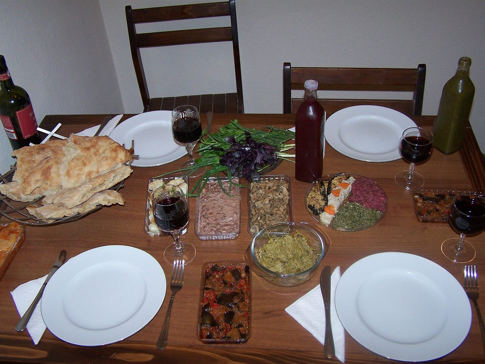
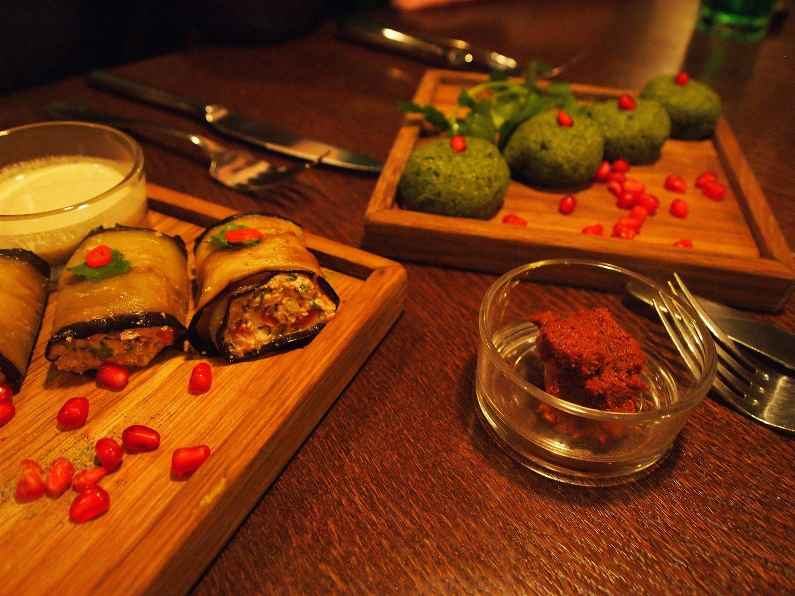
O restauracji
Giorgi to rodzinna restauracja, w której kuchnia gruzińska gra pierwsze skrzypce. Wszystko zaczyna się od chleba z pieca, ręcznie lepionych chinkali i chaczapuri z ciągnącym się serem, dokładnie tak, jak robi się to w Gruzji.
Do tego soczyste szaszłyki, aromatyczne zupy i domowe sosy, w tym tkemali oraz sacebeli. Każde danie podajemy z gruzińską gościnnością, bez pośpiechu, z sercem i pełnym stołem.
Chinkali z cienkiego ciasta i soczystym farszem, klasyka, której nie da się podrobić.
Adżarskie, imeruli, megrelskie. Ciepłe, maślane i wypełnione po brzegi serem.
Kolendra, orzechy, tkemali i wino. Przyprawy, które opowiadają historię Kaukazu.
Nasze hity
Kilka smaków, od których najlepiej zacząć przygodę z gruzińską kuchnią.
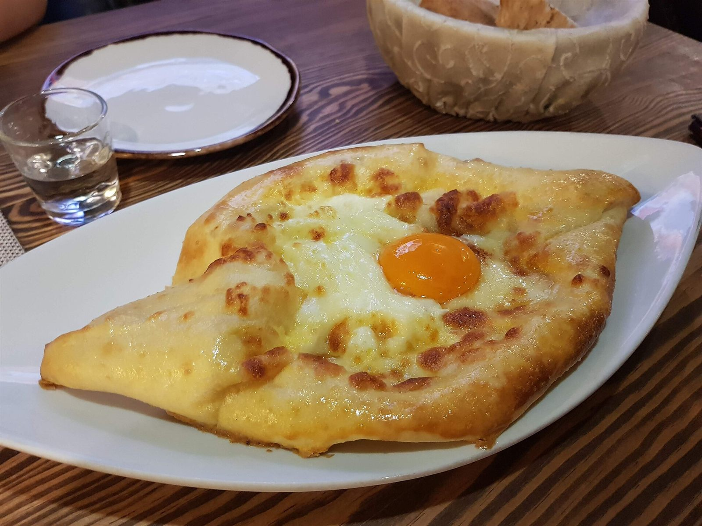
BestsellerŁódka z ciasta pełna sera, z jajkiem i masłem.
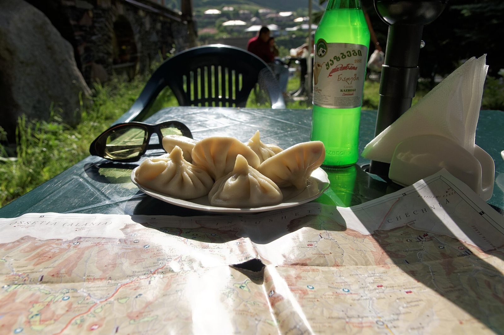
Pięć ręcznie lepionych pierożków z soczystym farszem.
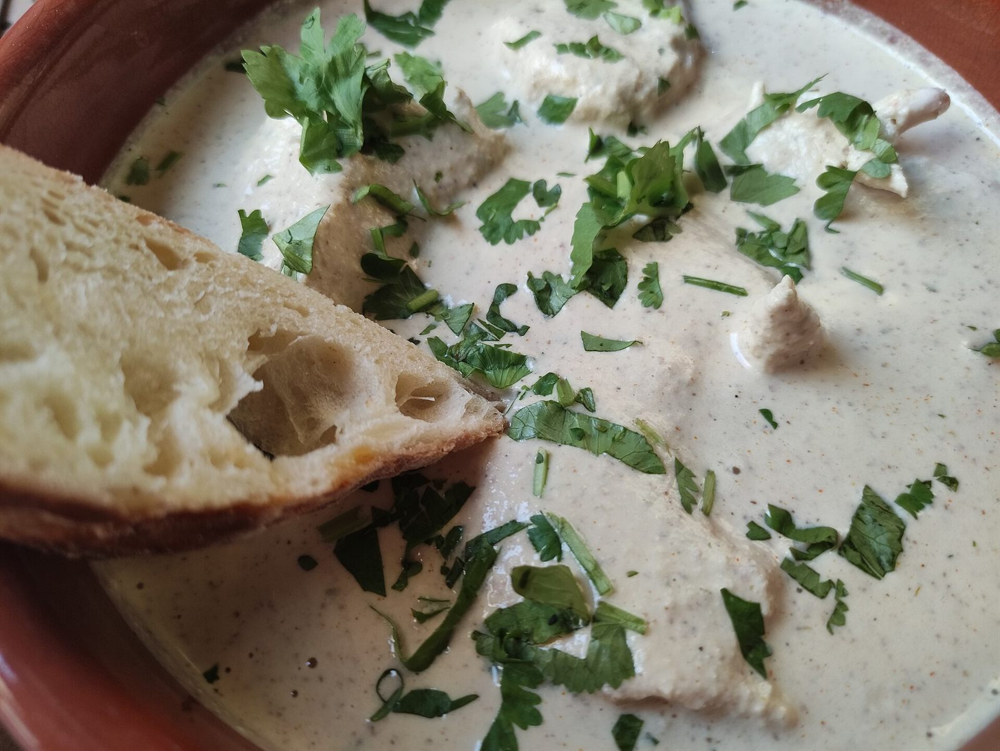
Kurczak w aksamitnym sosie z orzechów włoskich.
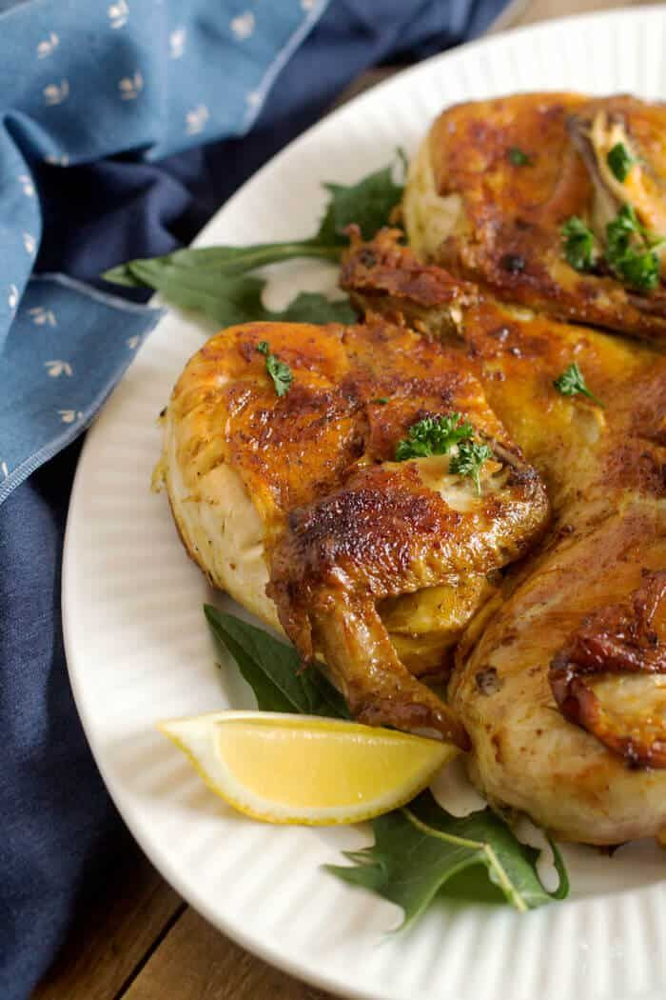
Chrupiący kurczak smażony pod prasą, z czosnkiem.
Galeria
Ciepłe chaczapuri, ręcznie lepione chinkali i gruzińskie przystawki, kilka kadrów z naszej kuchni.
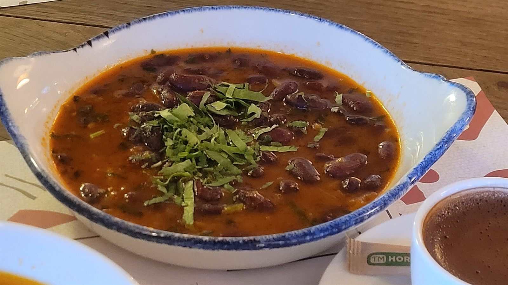
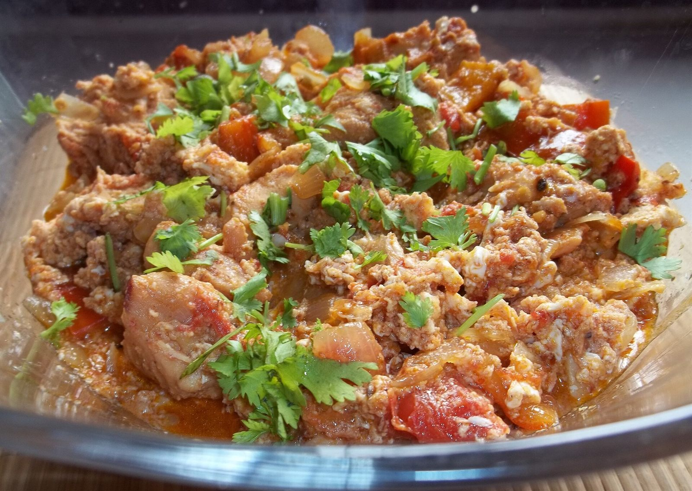
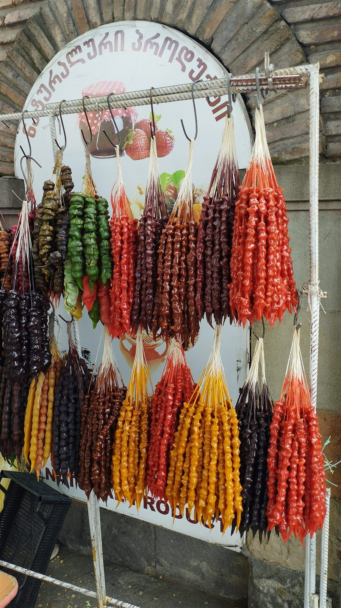
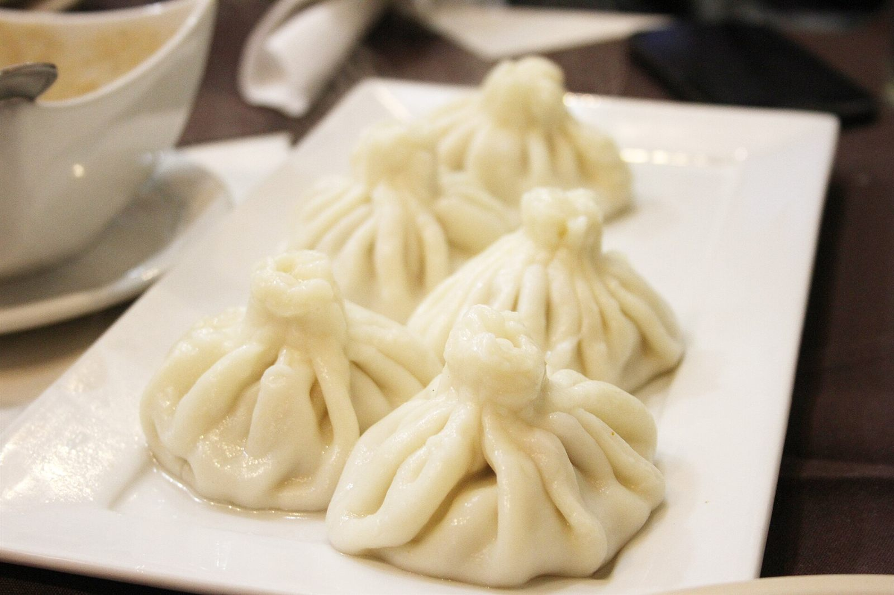
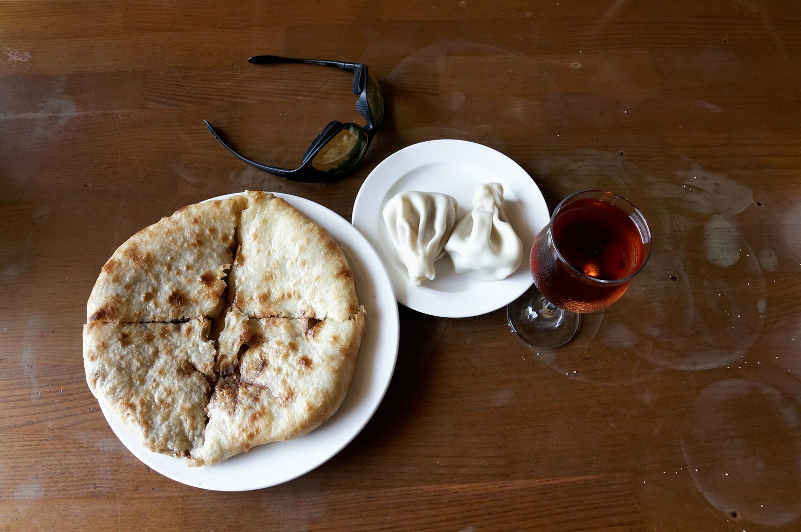
W Giorgi stawiamy na uczciwe porcje, domowe smaki i obsługę, która dba o to, by nikt nie wyszedł głodny. To miejsce na szybki obiad, rodzinne spotkanie i długą gruzińską ucztę.
Rezerwacje
Zadzwoń, a przygotujemy stolik dla dwojga, rodzinny obiad albo gruzińską ucztę dla większej grupy.
+48 512 415 240Na miejscu • Na wynos • Dla grup
Odwiedź nas